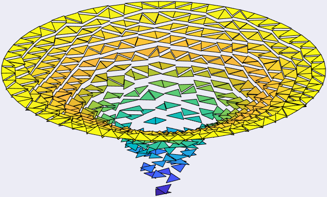
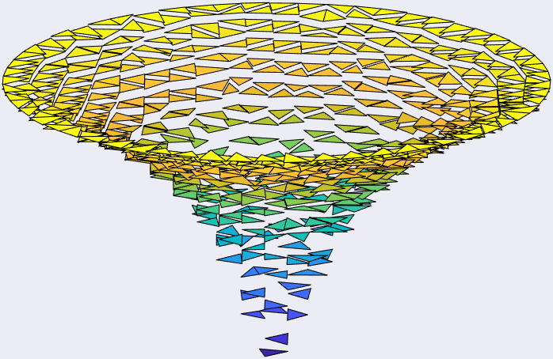
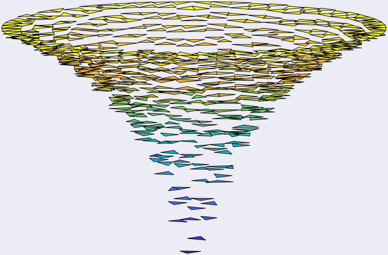
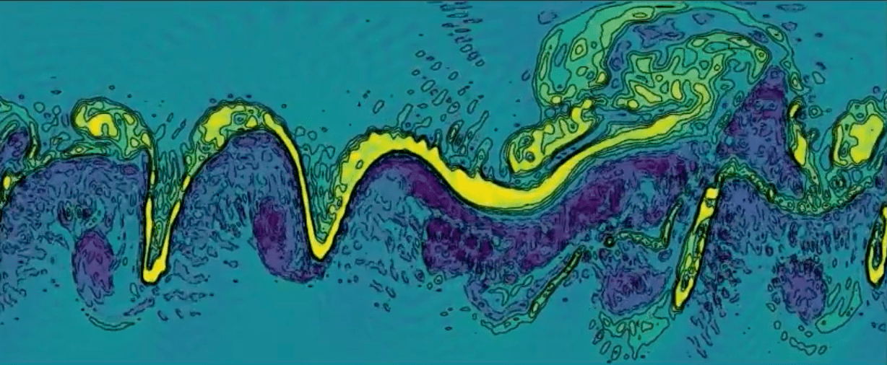
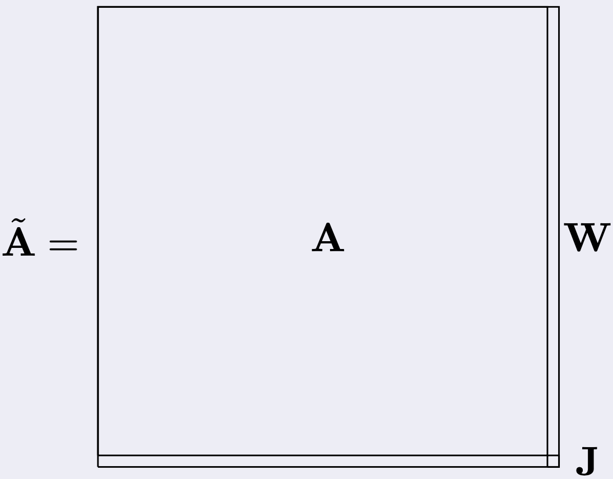

Monday to Friday, before 6pm, I am a Ph.D. in Mathematics operating as
research scientist in the field of Numerical Analysis
and High Performance Scientific Computing.
The rest of the time I enjoy riding my bike, eating, and cooking. I am
very passionate about mountains and outdoor activities such as camping
and barbecueing in the wild.
If instead you are one of my students and wish to ask me some questions,
you are welcome to drop me an email here:
Franco Zivcovich
Mathematician, pizza expert.
(site under construction - last update: January 2023)
Current position
I currently work in Nice, France, as research scientist for Neurodec.
My colleagues and I are developing our Myoelectric Digital Twin, i.e., a
virtual clone of your arm where the quasi-static Maxwell equations
ruling the physics inside of it are precisely reproduced.
Why that? You may ask. Well, the force exerted by a muscle
depends on the number of motor units (neurons commanding bunches of
muscle fibers) activation and the rates at which they discharge action
potentials.
The action potentials are "wrinkles" in the base-line electric potential
that propagates from neuromuscular junctions along muscle fibers until
they hit the tendons.
This process produces an electromagnetic 'footprint' (EMG signals) that
can be recorded by skin electrodes and use to train a computer to
associate movements and gestures to such 'footprints'.
Sometimes my job requires me being a guinea pig :C
However, the acquisition of real EMG data is time-consuming and expensive. It
requires expert knowledge and is error-prone even in the best circumstances.
Moreover, the produced dataset has limited variability, is highly
specific and it is only partially labeled, at best.
Applications include Robotic Control, Metaverse, Medicine and Sport
(images credits to Neurodec)
Here at Neurodec, we develope the
MDT
software, capable of simulating arbitrary large datasets of ultra-realistic
synthetic EMG signals.
The simulation is very fast, the data is extremely precise and perfectly
labeled, making it ideal for training industrial AI-based algorithms.
Research interests
At the moment, my scientific focus lies on
Low-Tech Highly-Efficient CPU/GPU implementations of Finite Elements
(FE) solvers: tired of the unnerving intricacy of the state-of-the-arts
FE implementations, I created my own FE environment.
What I expected being no more than a handy inquiry tool, turned out
to be quite a slick and highly-efficient gadget.
Now, I aim to assemble, in less than a thousand MATLAB/Python
lines, the richest FE software possible, and to make it faster than
the best-established compiled FE machineries.



Piecewise constant component of Mixed-Elements solution (lowest order
Raviart-Thomas Elements coupled with piecewise constant FE) to Poisson equation.
Will I be successful? Can't say yet. As now, I only got one of the
fastest generator ever of colorful pictures.
Design of integrator-solutor pairs in Exponential Integration of
stiff PDEs, recently with special attention to the so-called
Shallow Water Equations (SWEs).

Atmospheric simulations (in picture a flattened Earth) are among the
most prominent SWEs applications as the planar length scales are
much greater than the vertical one (atmosphere wraps Earth as
plastic wrap on a basketball).
Credits for this simulation's
frame go to Martin Schreiber
and his SWEET software.
In particular, we endeavour to design numerical schemes that ignore
some of the stiffest components in our SWE system.
Those fast moving components are, in fact, sound waves, whose
(costly) propagation does not really affect the simulation outcome
(which is a fancy way to say that you won't make it rain by
screaming at clouds).
Efficiently computing linear combinations of the so called
matrix phi-functions arising in the context of Exponential
Integration of stiff PDEs.
For a given matrix A, such linear combinations can be formed
by computing the action of a slightly larger, upper block diagonal
matrix Ã, as in figure, with W and J
depending on the desired combination.

To give an idea, usually A has millions of rows/columns while J is, like,
a 4 by 4 matrix at most. The matrix W is full and J is
the null matrix with ones on the first upper diagonal.
In a typical exponential integrator, we are tasked to compute hundred
if not thousands of times the action of the exponential of Ã
with varying matrices W and J.
This is a vastly repetitive task. We exploited this characteristic
of exponential integrators to develop
bamphi,
a routine computing the action of the matrix exponential which is
designed to collect and reuse the information about A gathered
through the exponential integration steps, reaching unmatched levels
of speed and accuracy on a variety of numerical experiments
(see CCZ22).
once again, Exponential Integration of stiff PDEs: this time
for computing linear combinations of phi-functions of matrices that
are in Kronecker form.
Matrices in this form are very common, as they arise from the Finite
Differences (FD) discretization of differential operators.
For such matrices, there exists a way of computing the action
their exponential (based on the BLAS3 matmul routine) which is
madly efficient, both over CPU and GPU parallel architectures.
In particular, we shown in
CCEOZ22
that the performance can be so extreme that are close to the
theoretical limit of the hardware.
However, my research interests include a host of topics from the wider
High Performance Scientific Computing domain, such as
Designing and testing of new numerical schemes that fit the
study of low-regularity 'non-smooth' phenomena resonating in the
context of hyperbolic PDEs
(check this LSZ22).
Arbitrary Precision computing of Functions of Matrices.
In particular, I am the proud co-author of the (fastest and) sole
algorithm
(check this CZ18)
for computing the matrix exponential that is capable to grant any
backward error accuracy disregarding the working precision.
This is particularly relevant even in those cases where standard levels
accuracy are needed.
Interpolation Theory: apparently, a new expansion I found in
Z19
of the widely known divided differences for analytics functions was
actually very helpful in Monte Carlo simulations of quantum many-body
systems, and this got me an algorithm called after myself
(search for Zivcovich's algorithm
here).
numerical methods for Optimal Control problems, in particular
the fast and efficient implementation of sparse and optimal control
problems for Cucker-Smale models.
Passion projects
section under construction: hope to see you back in a while :)